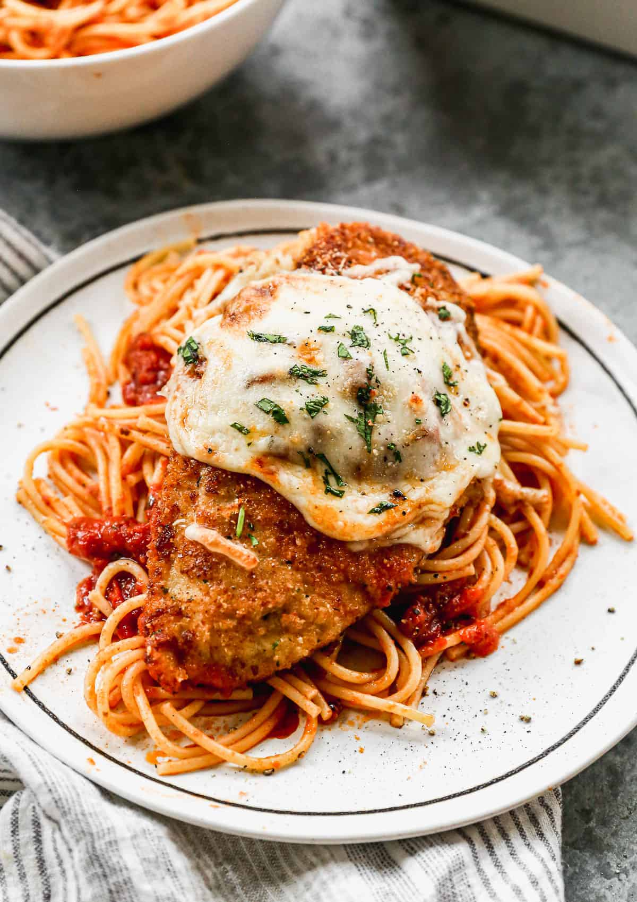

Chicken Parmesan

Description
Chicken Parmesan is a delicious and easy-to-make dish featuring breaded chicken breasts topped with marinara sauce and melted mozzarella cheese.
Ingredients
- 4 chicken breasts
- 1 cup all-purpose flour
- 2 eggs, beaten
- 1 cup breadcrumbs
- 1 cup grated mozzarella cheese
- 1/2 cup grated Parmesan cheese
- 1 cup marinara sauce
- 2 tablespoons olive oil
Steps
- Preheat the oven to 375°F (190°C).
- Season the chicken breasts with salt and pepper.
- Dredge the chicken in flour, dip in beaten eggs, and coat with breadcrumbs.
- Heat olive oil in a large skillet over medium heat and cook the chicken until golden brown on both sides.
- Transfer the chicken to a baking dish and top with marinara sauce and grated cheeses.
- Bake for 20-25 minutes, or until the cheese is bubbly and golden brown.